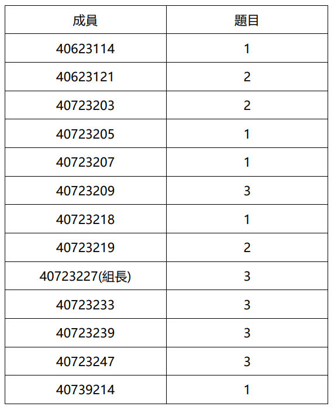

Topic 1 <<
Previous Next >> Online teching
Assignment3
Assignment3
表15.1教學方法和教學方式

.PNG)
為了解決這個問題，許多知名大學填充在線和住宅研究生課程。機電一體化，機器人和其他學科是教育的熱門話題。
15.2.2學院教職員工
大學教學人員，講師和教授理想情況下是成熟的並且具有一些實際的工業經驗。沒有經過真正的教學培訓，他們就他們被教，理論豐富，與學生的聯繫很少興趣或最終職業。大多數教學人員很少或沒有正規在教學，課堂管理或法律和道德事務方面的培訓。《美國新聞與世界報導》每年對排名靠前的學校進行排名，但這一排名通常大致反映研究費用，如果獲得博士學位，適當的人員，在這些人員中具有終端學位和研究員身份他們的機構。該等級可以包括畢業率和保留率。教學可能會為每位工作人員開出處方，但肯定是較低級的比資助合同續簽方面的研究更重要。諸如英國教學質量評估（TQA）之類的努力旨在在大多數情況下，突出並獎勵學校和學院的良好教學實踐研究評估練習（RAE）處理研究的方式相同。它是大學工作人員有責任很好地進行研究和教學在TQA和RAE審核中都提高評分。在美國，工程各部門均接受定期的全國ABET認證程序，但僅在學士學位級別。但是，什麼是最適合學生的呢？
15.2.3大學生
以美國為例，許多工科學生在重點突出的課程（例如電氣工程），可以選擇其專業在第一年或第二年。與這些研究同時，學生將接觸道德，法律問題和陳述。在歐洲，學生可以進入程序已經知道他們選擇的領域並經歷了四年的主題研究。一些學校在最後一年之前會注入工作經驗其他人從事最後一年的學生項目。毋庸置疑，成功的學生會學得很好缺乏學習能力的學生傾向於工程技能和對工程的興奮做得不好，經常轉移到其他（自認為更容易）的程序中，或者機構。學生如何學習科學是一種眾所周知的構想，大學入學前的技術，工程和數學（STEM）是主要指標關於大學生選擇哪些研究領域；這在全球範圍內有所不同如本章末尾所示。儘管有獎學金和經濟援助，位置，需求和社會地位確實可以確定哪些機構對某人可行申請人。全球的工科學校有些挑剔，需要四或甚至五年的學士學位學習。機電一體化無疑是在學士學位，碩士和博士學位級別任教，但通常由熱情的工作人員擁護。是否吸引學生攻讀研究生學位以幫助教職員工研究和教學而不是工業從業？這是最適合學生？
15.2.4機電一體化用人單位
想像一下，現在學生已經成功地在為了本章而生產或使用機電一體化的技術公司系統。這類雇主認為需要專業知識來促進他們的產品，uct或服務，並對即將畢業的畢業生或技術人員寄予厚望。在法律和醫學專業中，新人必須完成居住以在獲得許可之前必須先獲得認證，而在工程實踐中機構中的成員資格在很大程度上被認為是可選的，昂貴的，並且不相關的。對於新員工來說，這是影子操作經驗豐富的工程師的通用做法直到他們可以自行分配給項目專家為止。由此，讀者可以推斷出項目失敗的原因，成本超支的發生方式以及產品從來沒有像客戶期望的那樣工作。什麼對公司最合適？
15.3機電一體化：現實世界中的小插圖精選
以下內容包含了本章作者的三個真實的現實世界小插曲旨在反映機電一體化教育中必要主題的經驗。的Cor為了保密起見，省略了名稱或公司名稱，但希望讀者會發現這些示例很有用。每個小節將簡要描述實際系統及其設計方式，問題如何自我呈現，解決方案問題的解決，最重要的是，什麼教育技能使機電工程師解決該問題。第一種情況很多比其他兩個更詳細地說明了這一點。
15.3.1注塑成型監控系統
總覽一家注塑公司與系統工程公司簽約公司負責為其主要地點設計和實施生產監控系統最多可運行40台高科技成型機。大約運行35台機器每天有一天定期生產數千萬個塑料小零件日常。這些成分按重量包裝在盒子中，然後傳遞到合格的資產控制和庫存。圖15.1顯示了典型的注塑成型（IM）廠。
工廠在逐個工作的基礎上生產各種物品。換工作在任何機器上進行清洗，都需要付出很大的努力才能清除以前的有色原料-里亞爾和必要的模具已安裝，新的液態塑料通過下一份工作的系統。機械師可能會使機器循環多次，直到新零件是完美的，但是這些測試操作永遠都不應出現在產品中，位置計數。
要求摘要
在不贅述的情況下，系統的要求包括在24×7的基礎上測量每台機器的每個循環，比較根據工廠工作指令的實際表現，提供顯示屏整個工廠中，並將庫存數據定期下載到大型機電腦。從數據完整性的角度來看，這實際上很難做到因為並非所有機器週期都會產生產品，例如技術人員加載新作業或清除卡紙。
系統設計
與行業客戶多次會面後，圖15.2出現了。初步的系統設計。大多數情況下主要組件都是相當標準的工業自動化設置。可編程邏輯控制器（PLC）是耐斷電的試用過程控制代理，可提供具有本地存儲，通信功能以及多個輸入和輸出數據端口。在設計了系統之後，以下是迄今為止無法預料的問題經過更詳細的系統現場檢查後提出：
1.如何長距離連接機器信息？工廠已經過去了一英里長。
2.如何在如此長的距離上連接所有系統設備？電的信號均為低質量信號，並且產生了明顯的噪聲大部分來自註塑機。
3.顯示多少信息有用？
4.操作員和技工如何提供特定數據進行顯示？解決這些問題後，實際上確實需要重新設計系統以及購買其他軟件和硬件的過程編碼並安裝。
問題領域
在系統的日常運行中，以下意外情況出現了：
1.在操作期間隨時可能出現凍結的隨機數據。
2.主工廠電源中斷或停電後數據丟失。
3.處理機器的維護和維修狀態週期。
4.班次報告顯示錯誤時間。 這些問題似乎表明系統中存在致命缺陷，但可以解決 使用機電一體化原理。本章作者的解決方案摘要如下：
15.3.2在小型計算機上執行大型機代碼
總覽 某公司正在使用大型計算機來進行高級CADCAM和圖形處理，ics。每個設計站的成本超過50,000美元，大型機的租賃和運營 圖15.2初步系統設計
246 D.羅素
系統每月超過100,000美元。顧問發現一家公司發現了一種在2萬美元的小型計算機上運行大型機指令的方法，對小型計算機的主板進行一些細微的調整。
發明概述
圖15.3說明瞭如何訪問和執行大型機指令。小型計算機通過修改小型計算機主板而被切割帶有專有固件。虛線所示的原理圖框是唯一的需要修改固件。小型計算機字大小必須比較可以使用從主機購買的大型機指令芯片組（32位）製造商。
問題領域
系統運行良好，CADCAM應用成功並且是傳統圖形工作站的廉價替代品。一天之後 小型計算機操作系統升級後，系統完全無法運行吃了嵌入在CADCAM序列中的大型計算機指令拒絕導緻小型計算機返回非法指令陷阱和完整的CADCAM故障。
這個問題表明系統存在致命缺陷，最終被證明無法解決。能夠導致項目中止。本章作者的解釋是總結在第。 15.5.2。
15.3.3機械不穩定的系統
總覽許多研究人員研究了各種將控制歸納為行為的方法。 倒立鑽機。該系統適合自適應，智能，演進- 和學習控制。圖15.4是一個這樣的鑽機的照片， 作者工作[3]。從本質上講，購物車是在左/右行駛 模式在計算機命令上。實驗被限制在兩米長的軌道上 兩端都有碰撞傳感器。推車上的桿子是自由鉸接的，但很有限 大約±10°。如果系統超出範圍，則推車上的運動是 停了問題是通過左右移動推車來平衡桿 不應與立杆平衡動作混淆。
問題領域
兩個主要問題是確保系統採用其學習算法- 從初始隨機但合法的狀態開始，以便控制器可以識別它 然後進行控制偏移，並處理從動輪打滑 當購物車方向反轉時。本章作者對解決方案的解釋- 第一個問題的概述在本節中。
15.3.4案件摘要
對於以上三種情況中的每一種，這些問題情況如何 出現在下面的章節中。 15.5鼓勵讀者討論自己的問題 在閱讀該部分之前，請先與學生的想法聯繫起來。看完之後 作者的評論，然後讀者應該討論他們的教育模塊 機構或公司本來可以使創新工程師解決這些問題？
也許我們大學中缺少的教育經歷是深入介紹系統工程和系統集成。
Topic 1 <<
Previous Next >> Online teching